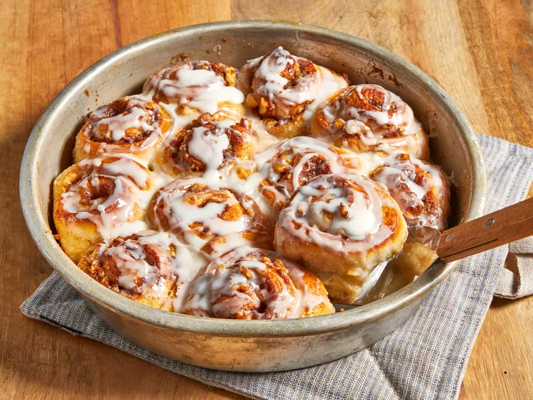

Easy Cinnamon Rolls
Home

Description
These easy cinnamon rolls are simple to make using prepared bread dough for a quick and delicious breakfast treat. They have a buttery cinnamon filling and are topped with a sweet glaze. Super yummy and gone in a flash at my house!
Ingredients
- 1 (1 pound) loaf frozen bread dough, thawed
- 3 tablespoons butter, melted
- ⅔ cup brown sugar
- ½ cup chopped walnuts
- 1 teaspoon ground cinnamon
- 1 teaspoon water, or as needed
- ⅓ cup heavy whipping cream
- ⅔ cup sifted confectioners' sugar
- 2 tablespoons milk
- 1 dash vanilla extract
Steps
- Gather all ingredients and lightly grease 2 round cake pans with butter.
- Roll bread dough out to an 6x18-inch rectangle. Brush with melted butter.
- Combine brown sugar, walnuts, and cinnamon in a small bowl; sprinkle over butter.
- Roll dough into a log, starting at the long edge. Moisten edge with water and seal.
- Fill a large skillet (cast iron is best) about 1/3 to 1/2 full with vegetable oil. Heat until VERY hot.
- Cut log into 20 slices; arrange rolls, cut sides down, in prepared cake pans. Cover with a towel and let rise in a warm place until doubled in volume, about 90 minutes.
- Preheat oven to 350 degrees F (175 degrees C). Pour heavy cream over dough.
- Bake in preheated oven until golden brown, about 25 minutes.
- Mix confectioners' sugar, milk, and vanilla extract in a small bowl; drizzle over warm cinnamon rolls to serve.